Visual Art through an Anatomical Lens
Select Works From the First Medical Bodies Online Class
The first edition of the online class “Medical Bodies: Art, Medicine, and the Human Body” took place between 7. April and 5. May 2020. With participants checking in from many countries around the world, including Cyprus, Italy, the US, Brazil, and Georgia, virtually all under lockdown due to the COVID-19 pandemic, we have learned about dialogues between visual art and medicine, and explored some of these connections through a series of creative assignments.
Hannah Perner-Wilson: Observing and Dissecting a Curious Natural Object
“i want to get to know the trees of berlin
maybe first the horse chestnut tree because it’s seeds are conkers
and i like them
sitting down to draw
hesitant to dissect
preferring to explore with my senses
of sight

of touch
and pressure
and imagination”
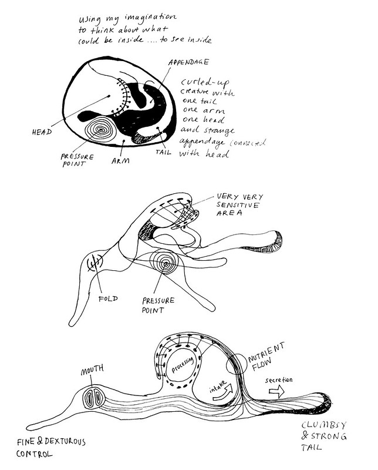See more on Hannah's website.
Sarah Titford: The Anatomy of Fingerprints
“My work is generally about the relationship of our physical body with our experience of the world around us. How does our individual anatomy influence our perspective? How does our mind influence our physical experience? Learning about the intricate way that our body can interpret vibrations opened my curiosity about human potential to pick up much larger scale vibrations that cannot be seen, heard or felt by touch.
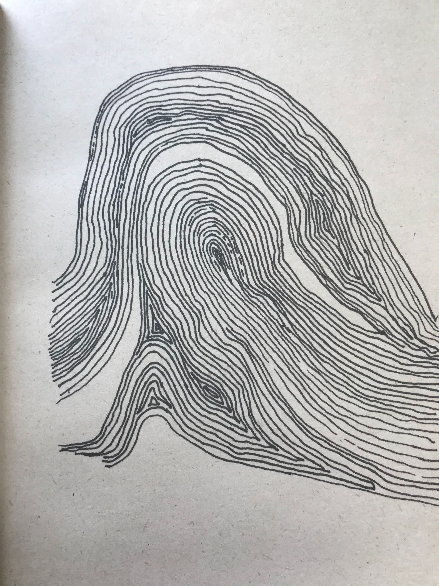


I became fascinated by the Pacinian Corpuscle and other sensory cells responsible for picking up different vibrations that are then interpreted by the brain to create our sense of touch. I wonder if every person has a completely unique experience of the world because we all have our own set of unique fingerprints. I studied my own fingerprints and tried to identify patterns in the lines and mimic them in my own drawings.”
Rosa Francesca: 3D Modeling the Human Body
“My work focuses on accessibility and the body. I primarily work with facial recognition and EEG brain technology, and am interested in how people use biofeedback in art, and the history of medicine and art. Learning more about the body also means I can have a better idea of how to make my work more representative of different bodies and understand the ethical implications of representing the body in art. I was really inspired by the other people I met on the course and how they have previously included medicine and the body in their artistic practice.
I explored my own body, looking in particular at my elbow since I often don’t observe that particular part of myself. I did some drawings in pen, and then created a 3D model in SculptGL - using this method I was able to sculpt it like I might from clay, and try and include as much detail as possible. It was interesting to see the elbow separated from my body and to see how abstract it looks in isolation.
 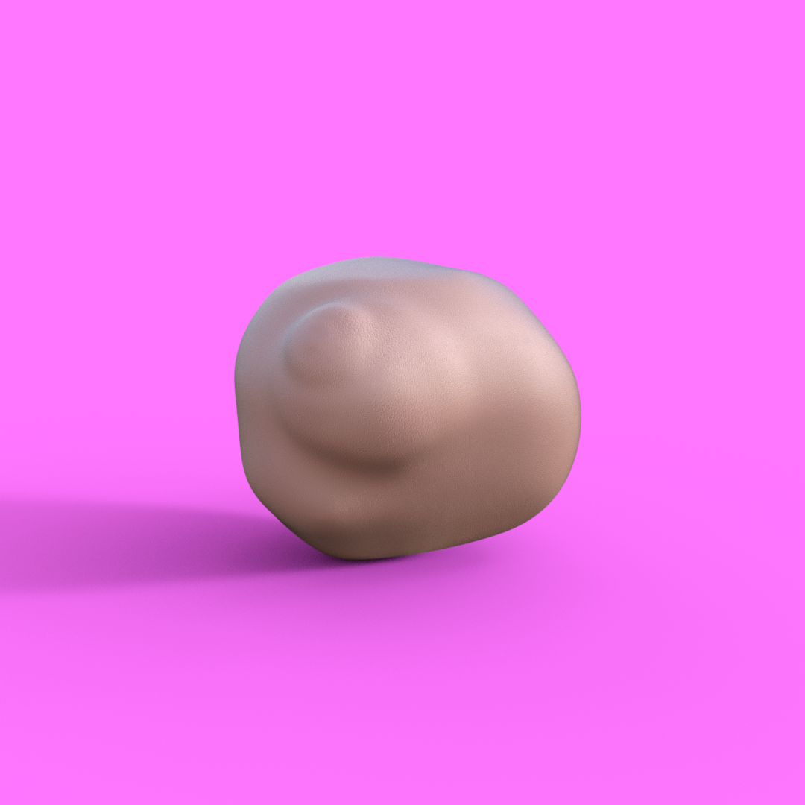
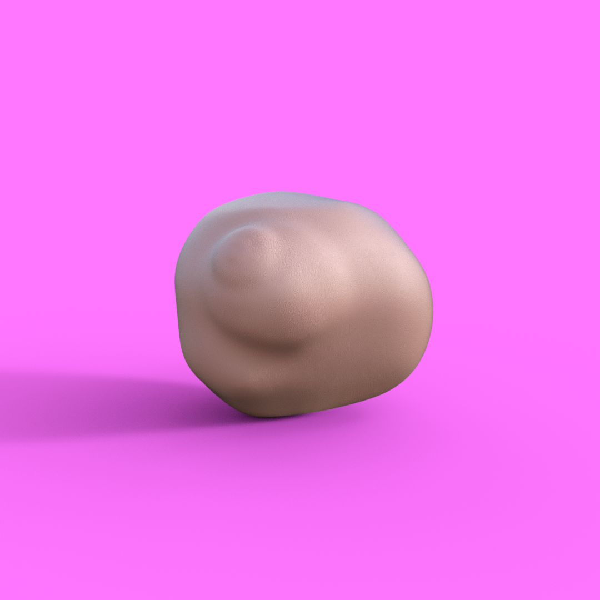
Additionally, I created a needle felted model of my collarbones, because these are my favourite parts of my body. Again, it was strange to see them in isolation, and since needle felting involves essentially stabbing at the felt for a long time, it was a very visceral experience, almost like creating a voodoo doll of myself!
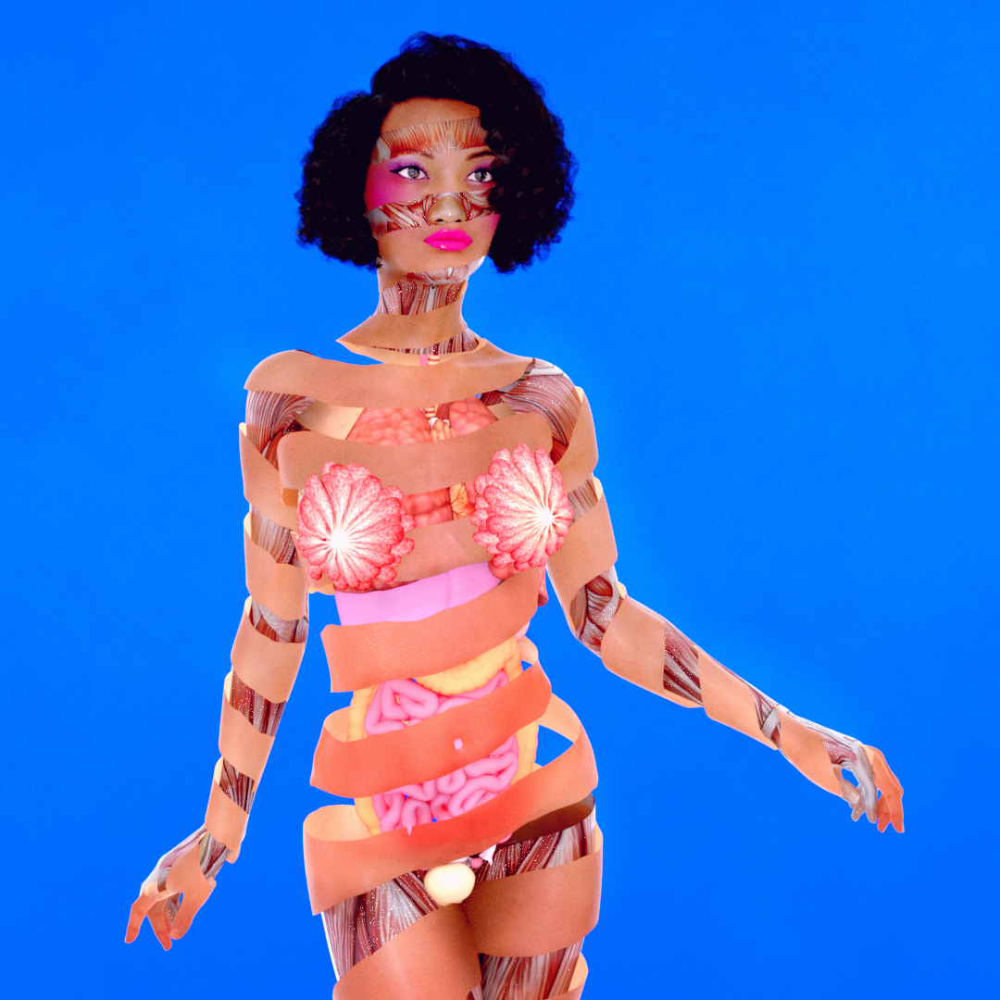
Part of my art practice involves CGI body horror 3D art. I was very inspired by Venerina wax figures that were discussed in the course, and created these 3D surreal self portraits, showing guts, breast glands, muscles and lungs as well as the outside of the body. I found the anatomical features on the Daz 3D online shop, and have continued using these in my art beyond the course.”
See more on Rosa's Instagram.
Mona Nasser: The Airbender
“I am more an academic rather than an artist - for drawing practices are cognitive processes that help me to explore new lines of inquiries in my research. The course has given me an opportunity to not only reflect on my drawing practice and how it relates to my academic research and previous education. It also opened up an opportunity for me to explore some of the cultural and historical differences with the European and the Middle Eastern approach to illustration of medical anatomy.
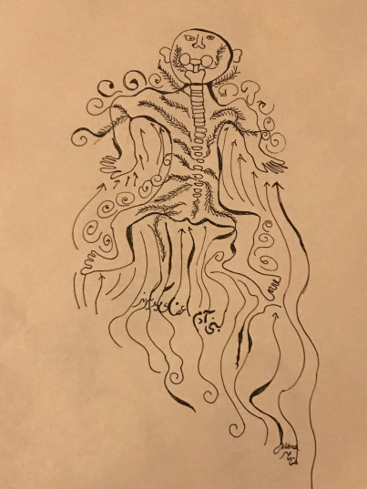There is a beautiful collection of Middle Eastern illustrations on the website of the National Library of Medicine. One thing that surprised me was that in a lot of images, the person is in squat. This reminded me of the sit flying position when we skydive. So I decided to build on the idea of micro- and macrocosmos and draw a dissection of the human body inspired by the pattern and approach in the Middle Eastern medical illustrations but added lines representing the wind.”
See more on Mona's website.
Lina Lopes: A Self-Biography
 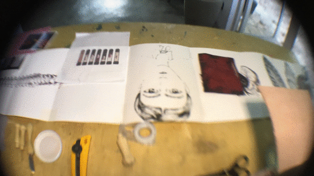
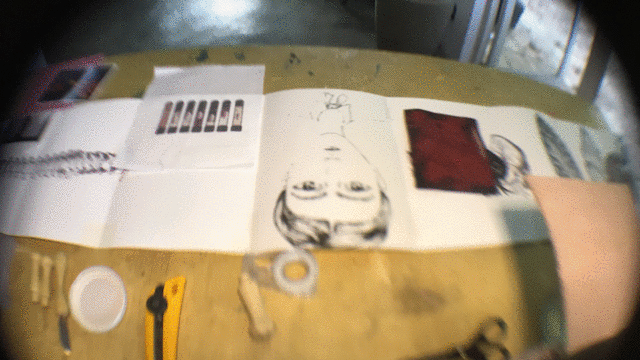
“I did an accordion book with the combination of laser cutter paper, a hacked A3 printer (for printing 1 meter of paper) some embroidering, my own blood, paper engineering and all kinds of collage with the funds. I tried to put all images of the skeleton at the near scale of my body. A kind of material to set up a Lina, an instruction book on how to make a diy Lina paper doll.”
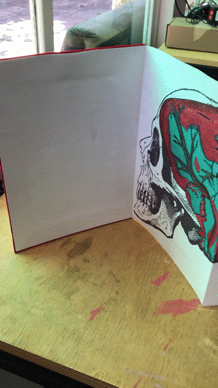See more on Lina's website.
Katy Connor: “Deep Seeing” in the Era of Microscopes
“Deep seeing” developed as a tool for understanding natural phenomena by both artists and scientists, during the Enlightenment. During the course we considered how the instruments of seeing have replaced the human eye, particularly within the realms of medical science. In the last century, our understanding of anatomy has been enhanced by photography, Xrays, microscopy and computation - bringing new patterns and perceptions to the way we see ourselves.
These works are a means for me to try to visually understand and articulate how we might see ourselves in this contemporary age of bio-informatics - of 3D virtual data models. How does our human anatomy translate into these forms of data visualisation?
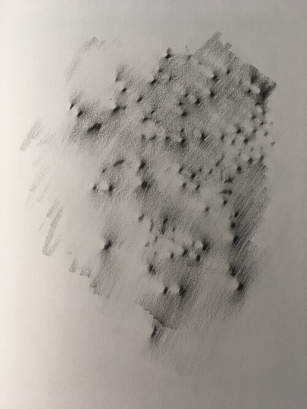 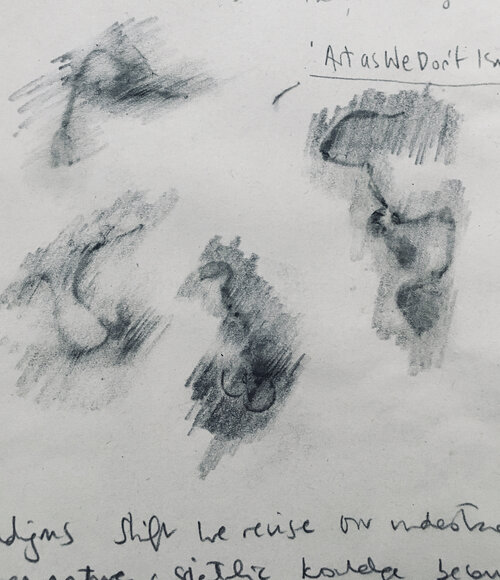
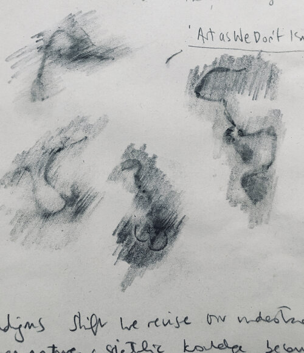
Prior to the course, I'd spent a couple of years as an artist-in-residence at a biomedical laboratory, that specifically worked with human red blood cells. Working from home and looking for small scale, domestic items to work with (instead of cells), I was drawn towards lentils as natural objects: they reminded me of some of the microscopic images I’d seen of red blood cells (in the laboratory). I started drawing them using pencil, rubbings and making scans. Soaking the lentils in flasks of water, they softened and started to sprout. As seeds, the lentils are a kind of embryo.
Xray crystallography is a means of 3D modelling - a form of contemporary scientific sculpture.
I found an online Xray Crystallography visualisation tool that highlights the virtual model with its associated DNA code. Here then, a simple lentil appears as complex layers of proteins, fructose, glucose, water and DNA. I had been reading about how the Coronavirus infects its human host body, by hijacking each cells DNA and replacing it with its own RNA code. By using the lentil as an analogue for the human body, I’ve been playing with 3D digital models of Xray Crystallography as ways to visualise the abstracted body through contemporary modelling of RNA and DNA structures.”
See more on Katy's website.
The online class “Medical Bodies: Art, Medicine, and the Human Body” will have its second edition starting from XXXXX. For more info and tickets, click here.
09 June 2020
Header image: Marisa Satsia: "Know Thyself", anatomical embroidery of the cross section of the head on red velvet, 2017